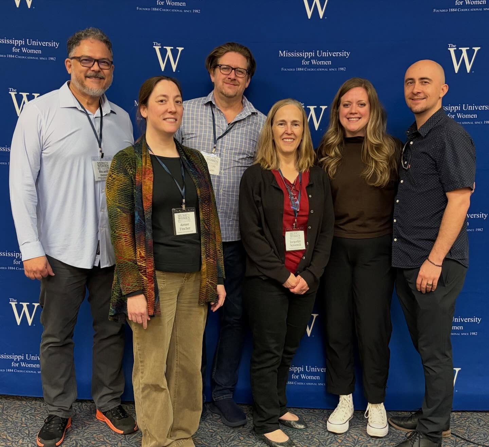

About Us

The Kaibab Trio — Shane Werts (oboe), Kelsi Doolittle (clarinet), and Aimee Fincher (piano) — is a chamber ensemble of Northern Arizona University Kitt School of Music faculty, founded in Fall 2024. Inspired by the Kaibab National Forest near their hometown of Flagstaff, the trio is dedicated to commissioning new works and amplifying historically underrepresented voices.
News
Recent highlights from the Kaibab Trio.
-

Music by Women Festival — March 2026
The NAU faculty contingent performed at the Music by Women Festival in March 2026.
-
Lucas’s Garden, by Amanda Harberg
Kelsi Doolittle performs this piece by Amanda Harberg with other members of the New World Symphony.
-
Music by Women Festival — March 2026
The NAU faculty contingent performed at the Music by Women Festival in March 2026.
-
Lucas’s Garden, by Amanda Harberg
Kelsi Doolittle performs this piece by Amanda Harberg with other members of the New World Symphony.
-
Ruth Gipps’ Trio
Kaibab Trio performs this piece by Ruth Gipps at the 2026 Music by Women Festival at the Mississippi University for Women, Columbus, MS.